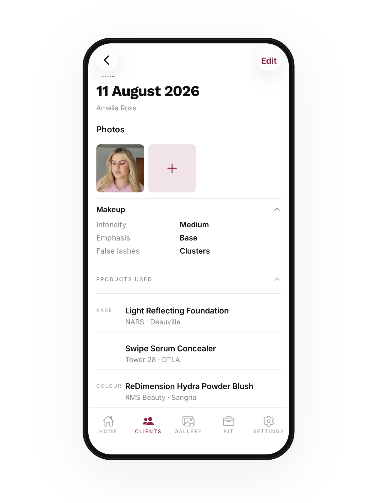

Step one · the trial
Do the hard part once
You already get it right at the trial. This is what saves you having to remember it months later: every product, every shade, and photos of the finished look.
- Tick products off your own kit instead of typing them out again
- A face chart for where everything actually went
- Photos saved with the look, not lost in your camera roll
